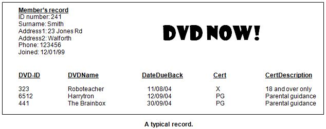

<div id="jsn-maincontent" class="span9 order1 row-fluid">
  <div id="jsn-maincontent_inner">
    <div id="jsn-centercol">
      <div id="jsn-centercol_inner">
        <div id="jsn-mainbody-content" class="jsn-hasmainbody">
          <div id="jsn-mainbody-content-inner1">
            <div id="jsn-mainbody-content-inner2">
              <div id="jsn-mainbody-content-inner3">
                <div id="jsn-mainbody-content-inner4" class="row-fluid">
                  <div id="jsn-mainbody-content-inner" class="span12 order1">
                    <div id="jsn-mainbody">
                      <div id="system-message-container"></div>

                      <div
                        class="blog"
                        itemscope
                        itemtype="https://schema.org/Blog"
                      >
                        <div class="category-desc clearfix"></div>

                        <div class="items-leading clearfix">
                          <div
                            class="leading-0"
                            itemprop="blogPost"
                            itemscope
                            itemtype="https://schema.org/BlogPosting"
                          >
                            <p>&nbsp;</p>
                            <h1 style="text-align: center">
                              Normalisation to 3NF
                            </h1>
                            <p>
                              <span style="line-height: 1.5"
                                ><strong>Introduction</strong
                                ><br />Normalisation is an analytical technique
                                used in database design. It aims to create a
                                database design that has two key
                                characteristics:</span
                              >
                            </p>
                            <ol>
                              <li style="list-style-type: none">
                                <ol>
                                  <li>Redundant data is minimised.</li>
                                  <li>
                                    The chance of making the data in the
                                    database inconsistent is minimised.
                                  </li>
                                </ol>
                              </li>
                            </ol>
                            <p>
                              To 'normalise' a database, you take a flat file
                              version of it and apply three rules, one after the
                              other. After each rule has been applied you may
                              see that a table gets broken into two or even more
                              tables, although the records in them will all
                              still be related. As you saw in the very first
                              section, this will help overcome all kinds of
                              problems. Approached in the right way,
                              normalisation is a very straightforward, very
                              mechanical process. Approached in the wrong way
                              and you will end up confused!<strong
                                >&nbsp;</strong
                              >
                            </p>
                            <p>
                              <strong>An example of normalisation</strong
                              ><br />‘DVD Now’ is a DVD club. A typical member
                              will have a membership card with their ID on,
                              their name, address, phone number and join date
                              on. When they want to take a DVD out, they present
                              their membership card along with the empty DVD box
                              from the shelf in the shop. The assistant gets out
                              their Member's Record and the following details
                              are written onto it: the ID of the DVD, the name
                              of the DVD, the date it is due back on, the
                              certification of the DVD and what the
                              certification means. Up to 3 DVDs can be borrowed.
                              A typical record looks like this:
                            </p>
                            <p>
                              You have been asked to analyse this database
                              using normalisation. Where do you start? As was
                              said earlier, normalisation is a very mechanical
                              process. It follows a number of pre-defined steps.
                              We will now go through in detail the steps that
                              you must follow. We will start with the setting-up
                              step, which we will call STEP 0.
                            </p>
                            <p>&nbsp;</p>
                          </div>
                        </div>
                      </div>
                    </div>
                  </div>
                </div>
              </div>
            </div>
          </div>
        </div>
      </div>
    </div>
  </div>
</div>
